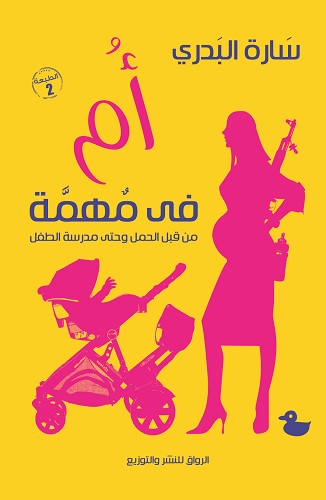

عن الكتاب
من قبل الحمل لحد مدرسة الطفل؛ تجربة أمومة مكتوبة بقرب وبساطة، بين المسؤولية والطموح وتفاصيل الحياة اليومية.
هذه الصفحة جزء من الموقع الرسمي للكاتبة سارة البدري، وتجمع بيانات الإصدار وروابط القراءة والشراء المتاحة للكتاب في مكان واحد.

من قبل الحمل لحد مدرسة الطفل؛ تجربة أمومة مكتوبة بقرب وبساطة، بين المسؤولية والطموح وتفاصيل الحياة اليومية.
من قبل الحمل لحد مدرسة الطفل؛ تجربة أمومة مكتوبة بقرب وبساطة، بين المسؤولية والطموح وتفاصيل الحياة اليومية.
هذه الصفحة جزء من الموقع الرسمي للكاتبة سارة البدري، وتجمع بيانات الإصدار وروابط القراءة والشراء المتاحة للكتاب في مكان واحد.
الأسعار والتوفر قد يتغيران من متجر لآخر؛ الرابط يفتح الحالة الحالية مباشرة.